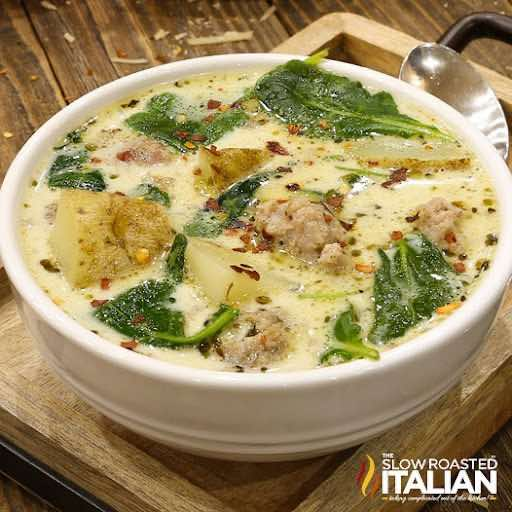

Instant Pot Zuppa Toscana
Insta potSoup
Servings12
PrepPT2M
CookPT20M

Ingredients
- 1 tablespoon extra virgin olive oil
- 24 ounces No-Sugar All Natural Pork Sausage (2 - 12 ounce packages )
- 1 tablespoon Italian seasoning
- 1 teaspoon onion powder
- 1 teaspoon garlic powder
- 1 teaspoon crushed red pepper flakes
- 1 teaspoon kosher salt
- 6 cups chicken stock
- 6 medium russet potatoes (6 - 8, cut into 1/2" cubes)
- 1 cup heavy cream
- 5 ounces baby kale
Directions
- Turn the 6-quart Instant Pot to "Saute". Once you can feel the heat when you hold your hand above it, add olive oil and crumble in the sausage.
- Cook, stirring occasionally and breaking up the sausage as desired (I like bigger chunks), until the sausage is cooked through, about 3-5 minutes. Drain excess the sausage drippings from the pan (if necessary).
- Add the Italian seasoning, onion powder, garlic powder, red pepper flakes and salt. Stir to combine.
- Add the potatoes and pour in the chicken stock. Stir to combine and scrape the bits from the bottom of the pot.
- Close the lid on the Instant Pot. Select "Manual" setting on the Instant Pot. Turn the pressure to high. Set timer for 8 minutes. Make sure the vent is closed.
- When cook time is complete, quick-release pressure according to manufacturer's directions.
- Use a slotted spoon to remove 2 cups of potatoes from the pot and place them in a bowl. Mash the potatoes and pour them back into the pot; this will help thicken the soup.
- Add the cream and kale to the soup, and stir to combine. Continue cooking the soup until the kale is wilted and tender, about 3 more minutes.
- Serve and enjoy!
Source
https://www.theslowroasteditalian.com/olive-garden-copycat-instant-pot-zuppa/?fbclid=IwAR1HkcXtMAeF864iG-ChYy4Ouc33-Q7ER1G7BBLfR7zOUzU-j_iQ9XU9UjY
This page includes Schema.org Recipe structured data for recipe importers.